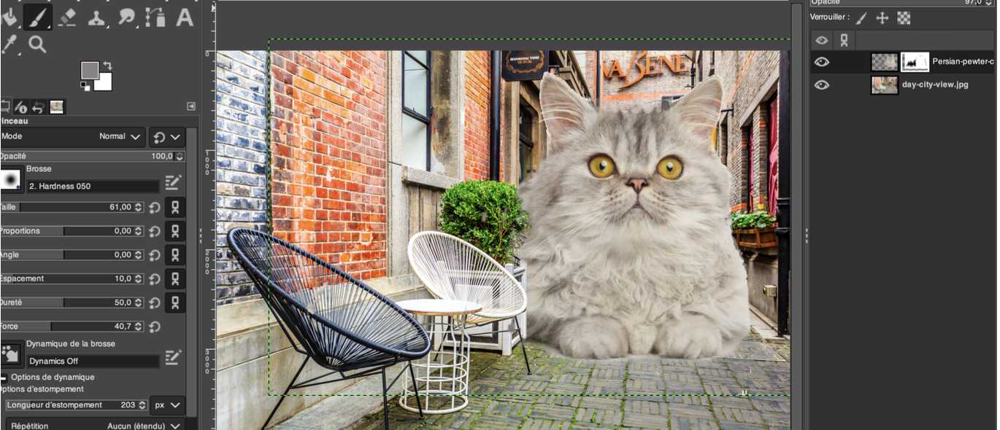
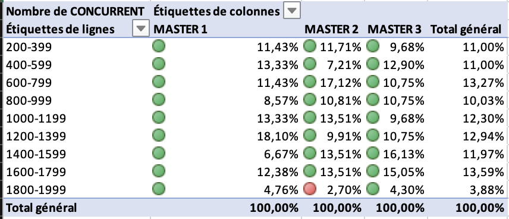
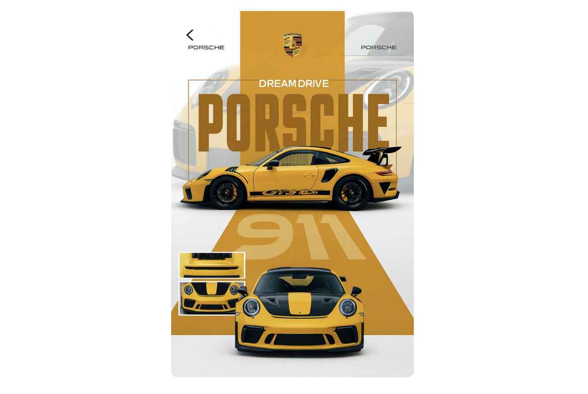
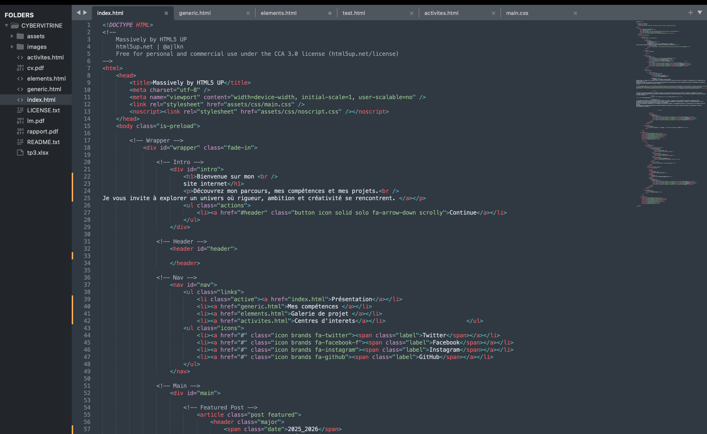
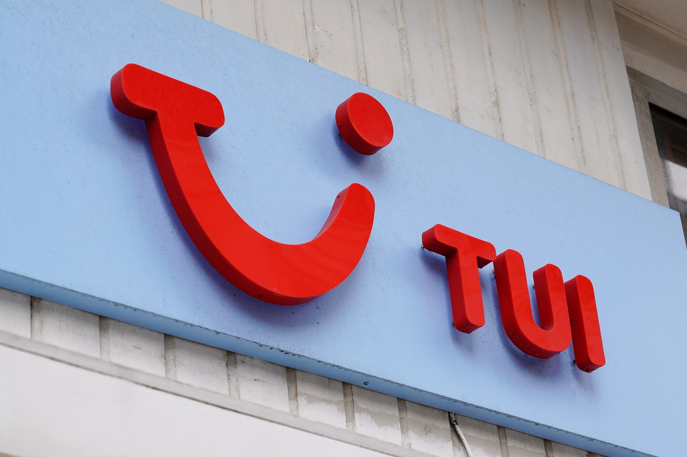
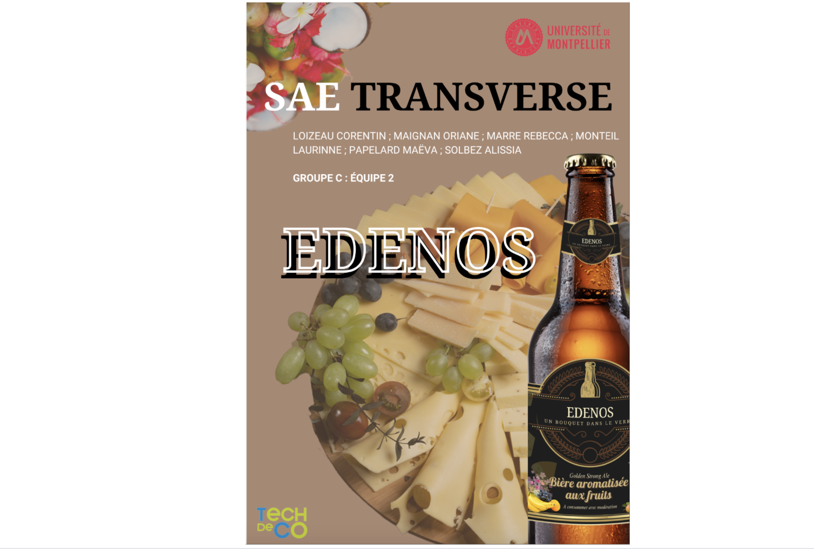

Galerie de projets
Voici toutes mes réalisations : retouches, montages, projets scolaires, outils numériques, etc.
GIMP

J’ai réalisé plusieurs retouches qui montrent ma capacité à utiliser les outils du logiciel. J’ai notamment travaillé sur le détourage d’images, la correction des couleurs, des contraste et la création de visuels simples avec des calques. Ces réalisations m’ont permis de développer des compétences de base en retouche photo, en composition visuelle et en gestion des calques.
{kind=link}
Excel

Voici un tableau croisé dynamique que j’ai réalisé à l’aide du logiciel Microsoft Excel. Ce travail m’a permis de développer de nouvelles compétences dans l’analyse et le traitement de données. Grâce à cet exercice, je maîtrise davantage la création et la mise en forme de tableaux croisés dynamiques, la gestion de grandes quantités d’informations, ainsi que leur organisation de manière claire et lisible. J’ai également appris à utiliser différentes fonctions d’Excel, notamment les fonctions SI, ET, OU, qui permettent de réaliser des calculs personnalisés et d’automatiser l’analyse des données. Ces compétences me permettent aujourd’hui de construire des outils plus complets, pertinents et adaptés aux besoins d’un tableau de bord professionnel..
{kind=link}
CANVA

Je maîtrise les outils de création visuelle, notamment Canva, qui me permet de concevoir des supports graphiques professionnels, attractifs et adaptés à chaque projet. Pour ce travail, j’ai réalisé moi-même l’affiche présentée ci-dessous : choix des couleurs, mise en page, typographies, hiérarchie des informations… chaque élément a été pensé pour obtenir un rendu clair et impactant. Je sais structurer un visuel, harmoniser les éléments et créer des compositions efficaces, qu’il s’agisse d’affiches, de présentations ou de supports de communication. Cette réalisation illustre ma capacité à transformer une idée en visuel cohérent et soigné.
{kind=link}
Projet WEB

Je maîtrise les bases du développement web, ce qui me permet de concevoir un site fonctionnel, structuré et adapté aux besoins d’un projet professionnel. Pour illustrer ces compétences, j’ai d’ailleurs développé moi-même ce site : de la mise en page à l’intégration, en passant par l’organisation du contenu. J’utilise notamment des tableaux, grilles et structures logiques pour organiser l’information de manière claire et lisible. Ce travail m’aide à créer des pages cohérentes, faciles à naviguer et capables de mettre en valeur les projets présentés. Le screen ci-dessus présente une partie du processus de création, preuve que je suis capable de concevoir et construire mon propre univers digital..
{kind=link}
Stage décembre 2024

J’ai effectué un stage d’observation au sein de TUI STORE du 9 au 20 décembre 2024. Cette expérience m’a permis de découvrir le fonctionnement d’une agence de voyage, de comprendre les missions du métier et de participer aux différentes activités quotidiennes de l’équipe. Vous pouvez retrouver l’intégralité de mon rapport de stage en cliquant sur le bouton ci-dessous afin d’en savoir plus sur mon expérience au sein de TUI STORE..
SAE MARKETING 2025

Dans le cadre de ma SAE, j’ai participé à la création d’un concept de bière premium appelée Edenos. L’objectif de ce projet était d’imaginer une bière capable d’offrir une véritable expérience gustative, en s’inspirant des codes du vin et de la dégustation.
Nous avons donc choisi un format 75 cl, plus raffiné et plus original, afin de positionner la bière comme une alternative élégante lors d’accords mets-boissons, notamment avec des fromages.
Tout au long du projet, nous avons travaillé sur le mix marketing :
Le produit, en développant une identité visuelle, un univers de marque et une proposition unique autour d’une bière fruitée et sophistiquée.
Le prix, pensé pour correspondre à un positionnement premium.
La distribution, en ciblant les bars, les GMS et une boutique propre.
La communication, en créant des supports visuels, une présence sur Instagram et des plaquettes commerciales pour les événements.
Ce projet m’a permis de mobiliser mes compétences en marketing, communication, analyse de marché, création graphique et construction d’une identité de marque. Il m’a appris à travailler comme une véritable équipe de microbrasserie, en allant de l’idée jusqu’à la stratégie de lancement.